Introduction
In the following tutorial, you will find out how to create physical collision proxies for your assets using any version of Blender, as well as how to set up a hierarchy and materials, in order to achieve the best physical results for your assets.
This tutorial is based on the FBX pipeline, meaning no 3rd party plugins or tools will be needed in order to get the right results. In CRYENGINE, we have a solid implementation for .fbx format support to make sure that the engine will be able to natively read and recognize .fbx setups quite easily. This allows us to achieve the results we want without using any Crytek plugins. 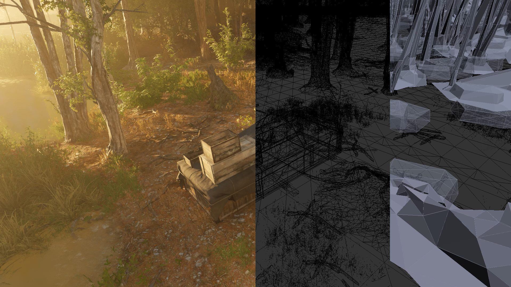
Collision proxies are simple geometrical elements or shapes, which are much more simplified versions of the original asset that they are linked to. In most cases, they only need to slightly resemble the general outline of the original asset in order to behave realistically from a physical perspective. 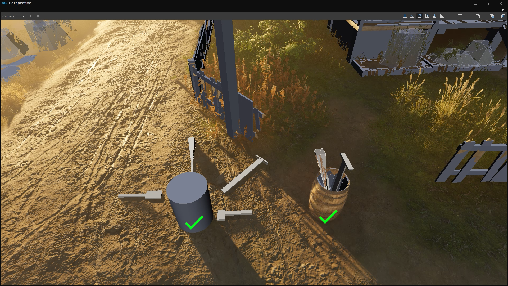
The level of detail represented in the proxy must match the specific use-case of the asset. For example, let’s say that this barrel we are going to be using today as a demonstration is supposed to only roll around or block the player’s path. In that case, a simple cylinder encasing the barrel will suffice as a physical collision proxy (see the asset on the left in the image above). However, if your asset is supposed to be physically accurate, and should allow you to place other physicalized objects inside it, then the collision proxy should convey enough detail in order to allow the physics system to take those details into account when checking for collisions (see the asset on the right in the image above).
Modeling
When modeling the geometry of the proxy, you have to keep a close eye on the complexity of its geometry. The more vertices your proxy will have, the more work will be thrown at the physics threads for every rendered frame, resulting in a worse performance and even a decrease in the accuracy when calculating collisions.
Hierarchy
The first thing to keep in mind when creating physical collision proxies is that they will always have to be linked to the original mesh. In this case, all we need to do is to select the proxy element in the hierarchy, and then drag it right on top of the main mesh while holding the SHIFT key: 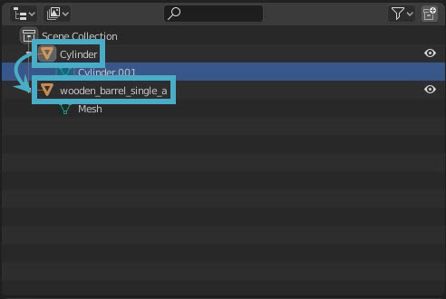
Dragging and dropping the proxy element
After that, the hierarchy should look like this: 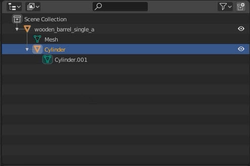
Final hierarchy in Blender
Now, in order to signal the Engine that this element is supposed to act as a physics proxy, we will rename the proxy geometry to $proxy: 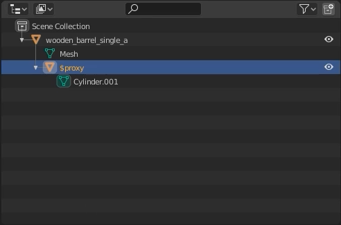
Naming the proxy geometry
You can have multiple proxies parented to the same mesh, if your mesh has moving parts, for example. In that case, you’ll have to also number the proxy by adding an _ (underscore), followed by a proxy number. So, if we would want to have multiple proxies, we would start with a $proxy_01 node, followed by a $proxy_02 node and so on. However, since we will only need one proxy for this object, we can just simply call it $proxy and move on to the next step.
Material Setup
The last important step in Blender is the material setup. In its current state, the proxy geometry would still act like any other rendered mesh; it would be rendered, and we don’t want that. We want the proxy geometry to be invisible to the player, and we want it to be flagged as a physical entity.
Both of these options can be set in the material of the proxy, but it’s not a setting we can find in Blender itself. We will set up those parameters in the FBX Importer, as soon as we import the object into CRYENGINE. But first, we need to set a different material to both the barrel and its proxy in order to differentiate between them after the object is imported into the Engine. We don’t need to configure anything at this point; we only need two elements to have two separate materials.
In order to do that, we simply need to click on the mesh of our original asset as well as all the LoDs or components that belong to the same asset part, except the proxy. Then, we will click on the material tab, then New button to create a new material : 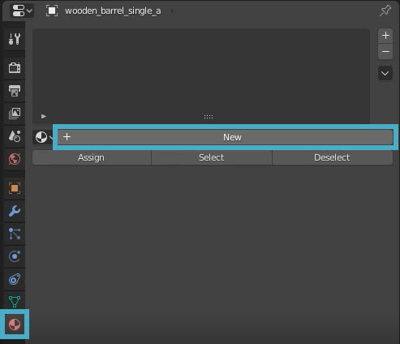
Creating a new material in Blender
Now, we will rename to something more descriptive. This would let us know what part of the asset that material is applied to. The name of the material does not matter; however, best practice would be to use all-lowercase letters and to avoid using any special characters or symbols apart from the ordinary.
In our case, we will name our material barrel_a: 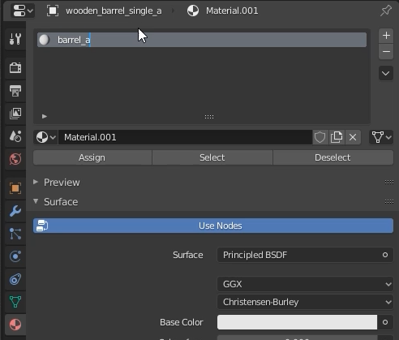
Naming the asset material in Blender
Now we are ready to do the exact same thing for the proxy by selecting the mesh and creating a new material which will be applied to it.
In this example, we will call it proxy_mat. Make sure to name it something descriptive that would indicate that this is the material you need to physicalize: 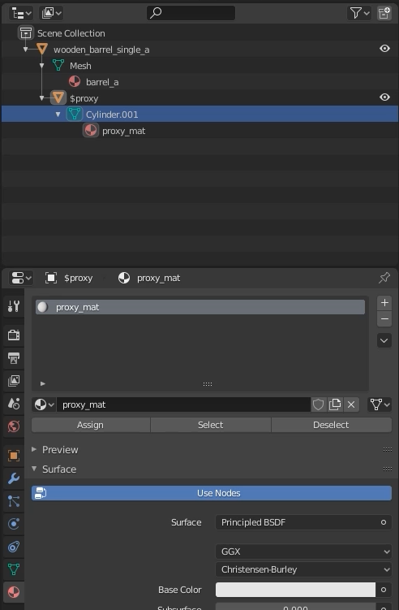
Naming the proxy material in Blender
That’s it for the Blender setup. Now you can export the entire scene as an .fbx file to any destination you want, and run CRYENGINE to continue the setup.
FBX Mesh Importer Setup
The rest of the setup will take place in CRYENGINE's FBX Mesh Importer which you can find under Tools → FBX Import → Mesh in Sandbox's menu bar.
With the Mesh Importer open, all we need to do is to drag the .fbx file we created into the FBX Importer’s Viewport.
If you click on the Material tab on the right-hand side of the tool, you can see that we have two materials. These are the two material entries we created in Blender, and you can see that their names have been successfully carried over: 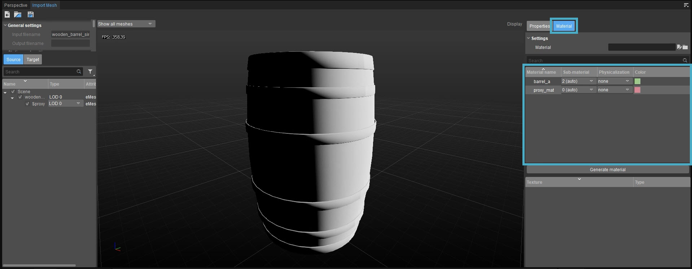
Material view in the FBX Mesh Importer
The CRYENGINE material itself doesn’t exist yet, so we will need to generate it. This will transform these two Blender materials into two sub-materials for the CRYENGINE material we’re going to use for the object. So click on the Generate Material button in the Materials panel and save it in any folder. The generated material will be permanently assigned to the geometry you are importing, unless you change it at a later point.
Now, as you might remember from earlier on, the reason why we wanted to have two materials in the first place was to be able to mark one of them as a physical proxy and to make sure that it isn't rendered. To do so, click the Physicalization dropdown menu icon on the right side of the proxy material and choose the Proxy Only (no draw) option. As soon as it's set, every geometry that this proxy sub-material is assigned to will act as a collision proxy and will no longer be rendered. 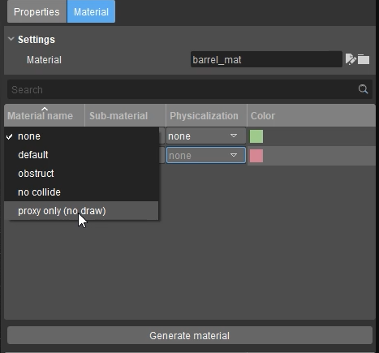
Physicalization dropdown menu
The last thing we want to do is to take a look at the hierarchy in the Source panel, and to click the dropdown menu next to the proxy we created in Blender ($proxy) to set the Type of geometry of the proxy top to Physics Proxy. 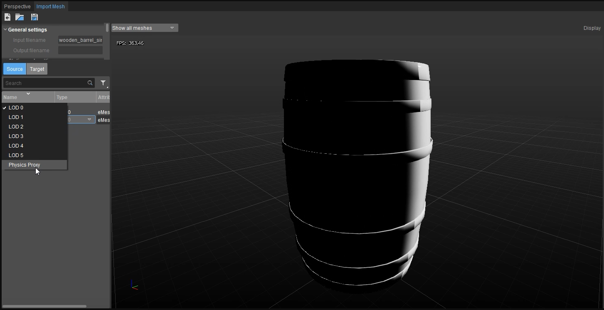
Setting the type of geometry of the proxy to Physics Proxy
Now you are ready to use the asset at any location you desire. 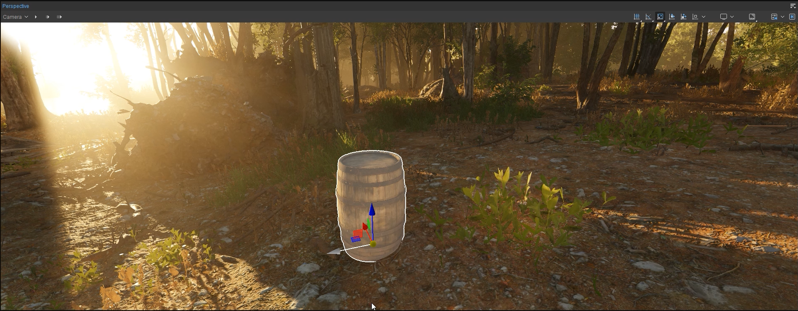
Result